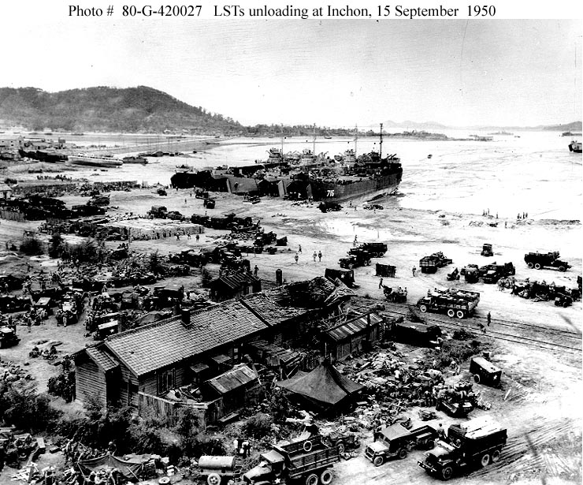

Directions: Work through the five stations in order. Each station is one decision point in the war. At each station, record what the decision makers knew, what they chose, and what the alternative would have cost. At the end, complete the decision ledger and judge where the war was won, lost, or settled. Stations 1 and 4 are verbatim documents with cuts marked by ellipses. Stations 2, 3, and 5 are labeled summaries of the record, prepared for this lesson.
Source: National Security Council, "NSC-68," April 7, 1950 (declassified report; Truman Library), as recorded in the audited TPSP record. Cuts are marked with ellipses.
The Soviet Union, unlike previous aspirants to hegemony, is animated by a new fanatic faith, antithetical to our own, and seeks to impose its absolute authority over the rest of the world. ...
The fundamental design of those who control the Soviet Union and the international communist movement is to retain and solidify their absolute power, first in the Soviet Union and second in the areas now under their control. In the minds of the Soviet leaders, however, achievement of this design requires the dynamic extension of their authority and the ultimate elimination of any effective opposition to their authority. ...
The United States, as the principal center of power in the non-Soviet world and the bulwark of opposition to Soviet expansion, is the principal enemy whose integrity and vitality must be subverted or destroyed by one means or another if the Kremlin is to achieve its fundamental design. ...
A more rapid build-up of political, economic, and military strength and thereby of confidence in the free world than is now contemplated is the only course which is consistent with progress toward achieving our fundamental purpose. ... It is clear that a substantial and rapid building up of strength in the free world is necessary to support a firm policy intended to check and to roll back the Kremlin's drive for world domination.
What did the authors say the Soviet design was, and what place did they assign the United States in it? Quote the phrases that carry each point.
What course did the paper say was the only one open to the United States, and what two verbs describe what the buildup was meant to do to the Kremlin's drive?
Source: Summary of the record, prepared for this lesson, with the photograph and figures from the United States Navy accounting of the Inchon operation held by the National Archives.

Inchon was a difficult harbor for a landing. Its tides, among the highest in the world at up to about 30 feet, left wide mud flats at low tide, and its seawalls stood above the beaches. MacArthur chose it because it was the port for Seoul and because the North Koreans, judging a landing there nearly impossible, had left it lightly held. On the morning of September 15, 1950, Marines took Wolmi-do, the island in the harbor. On the evening tide, the main force came ashore over the seawalls, about 70,000 troops in the operation in all. Seoul was retaken by the end of September, the North Korean army in the south was cut off from its supplies and collapsed, and forces in the Pusan Perimeter broke out to meet the landing force. In October, United Nations forces crossed the 38th parallel and drove north. The stated aim was no longer to restore South Korea. It was to unify the peninsula by force.
What did MacArthur know about Inchon that argued against landing there, and what did he know that argued for it? Name both sides from the summary.
The landing won its battle in two weeks. What decision taken in October changed the war the landing was part of, and who took it?
Source: Summary of the record, prepared for this lesson. Strength figures are the estimates carried in the standard accounting of the Chosin Reservoir campaign.
China had warned, in public statements and through diplomatic channels, that it would not stand aside if United Nations forces approached the Yalu River. The warnings were discounted. Chinese soldiers crossed the Yalu at night and hid by day to escape air observation. They struck United Nations units in late October, then broke off the attacks, which headquarters in Tokyo read as a bluff. On November 25, China attacked in force along the whole front. About 300,000 Chinese troops were in Korea. Around the Chosin Reservoir in the northeast, about 120,000 Chinese troops surrounded some 30,000 United Nations troops in subzero cold. The Marines at the reservoir fought their way south to the port of Hungnam and were evacuated by sea in December. In the west, the Eighth Army was driven back in a long retreat southward. Seoul fell to the Communists again in January 1951.
What warnings did the decision makers in Tokyo and Washington have before November 25, and what did they conclude from the attacks in late October?
Use the figures. Around the Chosin Reservoir, what was the balance of forces, and what did the surrounded force do instead of surrendering or being destroyed?
Source: Harry S. Truman, Statement and Order by the President on Relieving General MacArthur of His Commands, April 11, 1951. Truman Library, text of the Public Papers of the Presidents. Cuts are marked with ellipses. The closing passage that follows is Douglas MacArthur, Farewell Address to a Joint Session of Congress, April 19, 1951 (Congressional Record; closing passage), as recorded in the audited TPSP record.
With deep regret I have concluded that General of the Army Douglas MacArthur is unable to give his wholehearted support to the policies of the United States Government and of the United Nations in matters pertaining to his official duties. ... I have, therefore, relieved General MacArthur of his commands and have designated Lt. Gen. Matthew B. Ridgway as his successor.
Full and vigorous debate on matters of national policy is a vital element in the constitutional system of our free democracy. It is fundamental, however, that military commanders must be governed by the policies and directives issued to them in the manner provided by our laws and Constitution. In time of crisis, this consideration is particularly compelling.
General MacArthur's place in history as one of our greatest commanders is fully established. ...
MacArthur, addressing Congress eight days later, closed with these lines:
The world has turned over many times since I took the oath on the plain at West Point, and the hopes and dreams have long since vanished, but I still remember the refrain of one of the most popular barracks ballads of that day which proclaimed most proudly that old soldiers never die; they just fade away.
State the ground Truman gives for the dismissal, in his own sequence: what MacArthur was unable to do, and what rule about commanders the statement lays down.
MacArthur's closing makes no argument about Korea. What does it do instead, and why would a dismissed commander choose to end that way?
Source: Summary of the record, prepared for this lesson, from the National Archives account of the armistice negotiations and the text of the Korean Armistice Agreement.
The talks opened on July 10, 1951, at Kaesong and later moved to Panmunjom. They ran through 158 meetings over two years and seventeen days, the longest negotiated armistice in history. Most terms were settled early. The talks stalled over prisoners of war. The United Nations Command held about 150,000 prisoners and the Communist side about 10,000, and thousands of the prisoners in United Nations hands refused to go home. The United States held that no prisoner would be forced to return. The agreement signed on July 27, 1953 fixed a Military Demarcation Line along the final line of contact, close to the 38th parallel, with a demilitarized zone about 2.5 miles wide drawn along it. It set up a Military Armistice Commission to supervise the truce and arranged the exchange of prisoners, with a neutral commission to handle those who refused repatriation. It was signed by commanders, not governments. South Korea's president, Syngman Rhee, refused to sign it. It stopped the shooting at 10 that evening. It was not a peace treaty, and none has followed.
Which single issue held the armistice up for most of two years, and what position did the United States take on it?
Name three things the armistice did, and two things it did not do.
Complete the ledger. Use one or two short entries per box, drawn from the stations.
| Decision point | What they knew | What they chose | What the alternative would have cost |
|---|---|---|---|
| April 1950: the paper | |||
| October 1950: past the parallel | |||
| April 1951: the limit held | |||
| July 1953: the terms |
Where was this war decided? Judge whether Korea was won, lost, or settled, and name the decision point your ledger shows carrying the most weight. Write a short paragraph using evidence from at least two stations.
What was the Soviet design, and what place did the United States hold in it? The design was to retain and solidify absolute power at home and in the areas under Soviet control, which in the leaders' minds required the dynamic extension of their authority and the ultimate elimination of any effective opposition to it. The United States, as the principal center of power in the non-Soviet world and the bulwark of opposition to Soviet expansion, was the principal enemy whose integrity and vitality had to be subverted or destroyed if the Kremlin was to succeed.
What course was the only one open, and what two verbs govern it? A more rapid build-up of political, economic, and military strength, and of confidence in the free world, than was then contemplated. The buildup was to support a firm policy intended to check and to roll back the Kremlin's drive for world domination. The pair of verbs is the point of the station: checking is containment's older language, rolling back reaches past it, and students should notice that the paper argues for both at once.
What argued against Inchon, and what argued for it? Against: tides up to about 30 feet that left wide mud flats at low tide, seawalls above the beaches, and a harbor a landing force could enter only on the tide. For: Inchon was the port for Seoul, the capital and supply hub, and the North Koreans, judging a landing there nearly impossible, had left it lightly held. The choice traded tactical difficulty for strategic surprise, and the summary's photograph, LSTs dry on the mud at low tide, shows the difficulty in plain form.
What decision in October changed the war? After Seoul was retaken and the North Korean army in the south collapsed, United Nations forces crossed the 38th parallel and drove north, and the aim of the war changed from restoring South Korea to unifying the peninsula by force. The decision was taken by the Truman administration and the United Nations command, with MacArthur as its strongest advocate in the field. It is the decision Station 3 answers.
What warnings were there, and what was concluded from October? China had warned in public statements and through diplomatic channels that it would not stand aside if United Nations forces approached the Yalu. Chinese troops then struck in late October and broke off their attacks. Headquarters in Tokyo read the break-off as a bluff or a token effort rather than as the first move of a full intervention, and the advance continued. The November 25 offensive, by about 300,000 Chinese troops already inside Korea, was the correction.
What was the balance at Chosin, and what did the surrounded force do? About 120,000 Chinese troops surrounded some 30,000 United Nations troops around the Chosin Reservoir, a four to one balance in subzero cold. The Marines fought their way south down the single road to the port of Hungnam, carrying their wounded and much of their equipment, and were evacuated by sea in December. The force was defeated in its mission and driven out of the northeast, and it was not destroyed, which is why the campaign is argued about in both directions.
State Truman's ground, in his sequence. First, the personal finding: MacArthur was unable to give his wholehearted support to the policies of the United States Government and of the United Nations in matters pertaining to his official duties, and so was relieved, with Lt. Gen. Matthew B. Ridgway designated as his successor. Second, the rule: full and vigorous debate on national policy is vital in a free democracy, but military commanders must be governed by the policies and directives issued to them under the laws and the Constitution, a consideration particularly compelling in a crisis. The praise that follows, that MacArthur's place in history as one of the country's greatest commanders is fully established, is part of the ground as Truman presents it: the dismissal is about obedience to policy, not about competence or honor.
What does MacArthur's closing do instead of arguing? It makes no defense of his conduct in Korea and no attack on the policy. It places him inside a soldier's song, old soldiers never die, they just fade away, and turns a dismissal for insubordination into a farewell by an old soldier who had done his duty. The effect, which students can test against the crowds and the congressional reception he received, was to win the public argument he had just lost in the chain of command, without giving Truman anything further to answer.
Which issue held the armistice up? Prisoners of war. The United Nations Command held about 150,000 prisoners and the Communist side about 10,000, and thousands of those in United Nations hands refused to return home. The United States held that no prisoner would be forced to return, and the final agreement gave refusers to a neutral commission rather than compelling them.
Three things the armistice did, and two it did not. Did: it stopped the shooting, effective at 10 p.m. on July 27, 1953; it fixed a Military Demarcation Line along the final line of contact with a demilitarized zone about 2.5 miles wide; it arranged the exchange of prisoners and set up a Military Armistice Commission to supervise the truce. Did not: it did not settle the political future of Korea or unify the peninsula, and it was not a peace treaty. It was signed by commanders rather than governments, and South Korea's president refused to sign it at all.
Ledger, expected entries. April 1950: they knew the Soviet bomb and the fall of China had changed the balance; they chose, on paper, a rapid buildup meant to check and roll back Soviet expansion, and shelved it as too costly until war arrived; the alternative, funding it in peacetime, would have cost a tax increase no Congress would pass. October 1950: they knew Inchon had destroyed the North Korean army in the south and that China had warned against an approach to the Yalu; they chose to cross the parallel and aim at unification; the alternative, stopping at the parallel, would have cost the chance at unification and left North Korea intact as a threat. April 1951: they knew MacArthur's wider war risked Soviet entry; they chose to hold the limit and dismiss him; the alternative, widening the war or keeping a defiant commander, would have cost either a possible third world war or the principle of civilian control. July 1953: they knew the line had not moved in two years; they chose an armistice on the line of contact with no forced repatriation; the alternative, fighting on, would have cost more years of casualties for ground neither side could take. Closing paragraphs earn full credit for any verdict argued from the ledger. The settled answer is the strongest on the documents: the original aim, a preserved South Korea, was won by the autumn of 1950, the added aim of unification was lost by December, and everything after was the price of settling between the two.